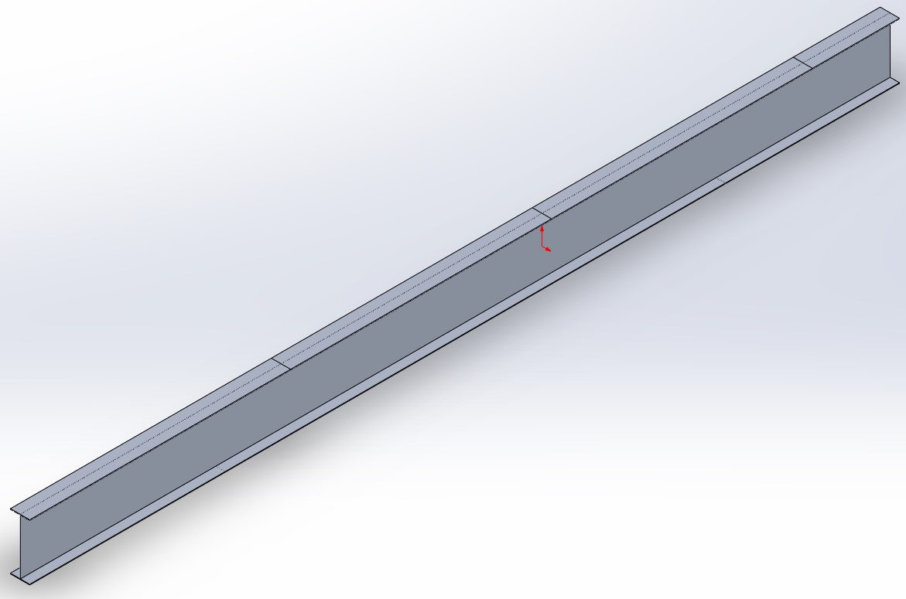
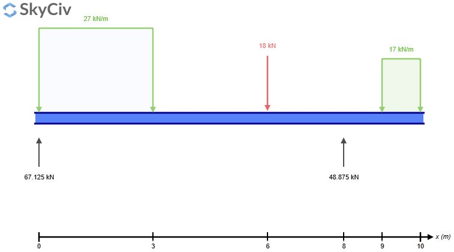
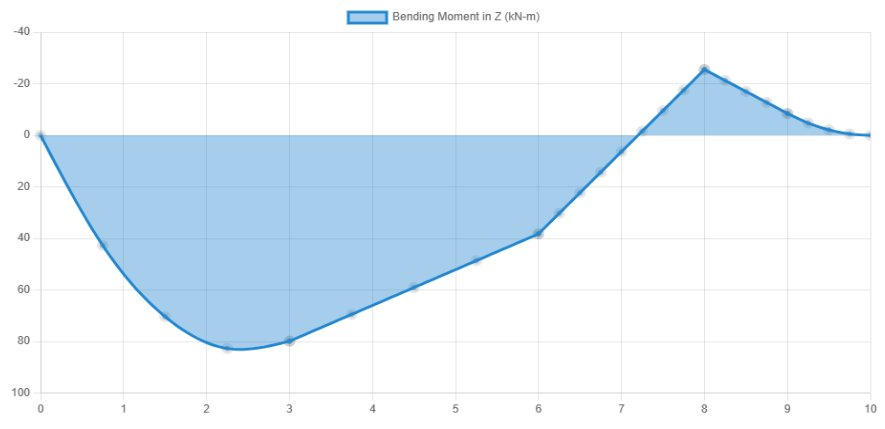
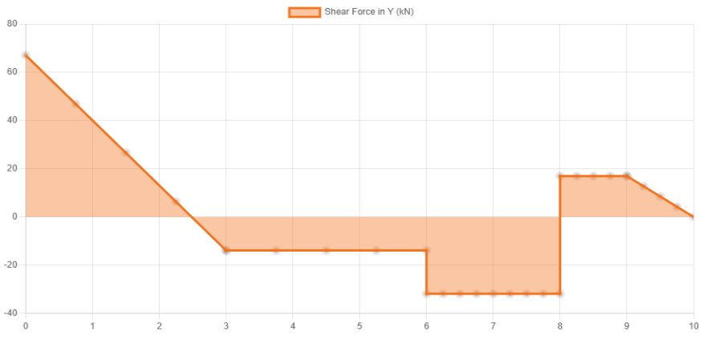
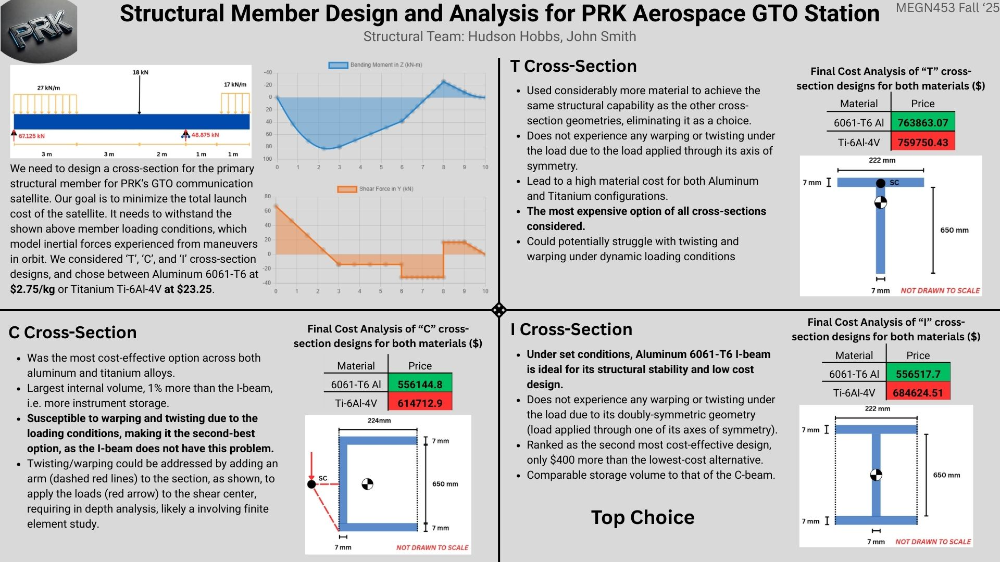
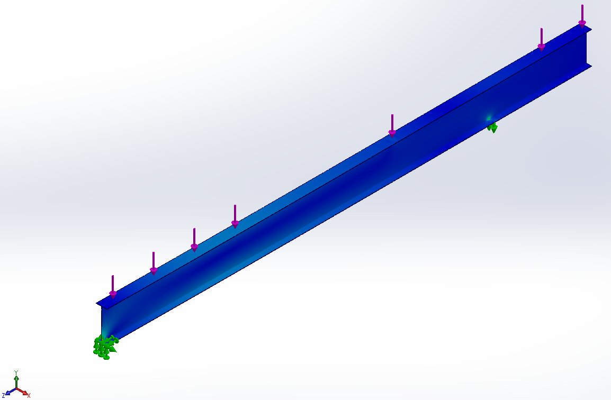
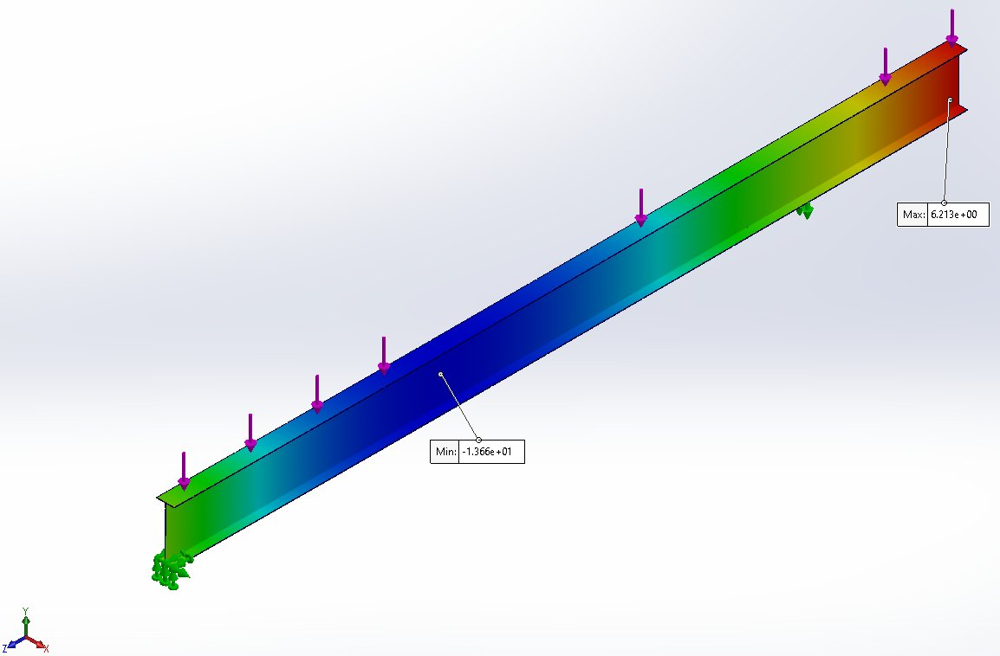

Project Overview
This project tasked our team with designing the primary structural member for PRK Aerospace's GTO communications satellite. The goal was to minimize total launch cost — driven by material mass — while ensuring the beam could withstand the specified inertial loading conditions experienced during orbital maneuvers.
We evaluated T, C-channel, and I-beam cross-section geometries across two candidate materials (6061-T6 Aluminum at $2.75/kg and Ti-6Al-4V Titanium at $23.25/kg), using SkyCiv for primary structural analysis. I independently validated the winning design using SolidWorks Simulation.

Requirements & Loading Conditions
- Materials considered: 6061-T6 Aluminum ($2.75/kg) and Ti-6Al-4V Titanium ($23.25/kg)
- Geometry constraints: Web and flange dimensions ≤ 700 mm; wall thickness ≥ 7 mm
- Objective: Minimize total launch cost while meeting all structural performance requirements
- Span: 10 m simply supported beam
- Applied loads: 27 kN/m distributed over 0–3 m, 18 kN point load at 6 m, 17 kN/m distributed over 9–10 m
- Reactions: 67.125 kN at x = 0 m, 48.875 kN at x = 8 m

Shear & Moment Diagrams
SkyCiv was used to generate shear force and bending moment diagrams across the full 10 m span. The bending moment peaks at approximately 78 kN·m between x = 2–3 m, and a secondary local maximum of −22 kN·m occurs near x = 8 m at the right support. These values governed the required section modulus for the cross-section design.


Candidate Cross Sections
Three cross-section geometries were evaluated under the thin-walled beam assumption, comparing second moment of area, torsional rigidity, shear flow, warping susceptibility, and total material cost for both materials. All candidate sections used 7 mm wall thickness.
T Cross-Section
- Required considerably more material to achieve the same structural performance as the other geometries
- No warping or twisting under symmetric loading — load applied through its axis of symmetry
- Highest material cost of all three candidates for both aluminum and titanium
- Most expensive option: $763,863 (Al) / $759,750 (Ti)
C Cross-Section
- Most cost-effective option across both materials — $556,145 (Al) / $614,713 (Ti)
- Largest internal volume: 1% more than I-beam, enabling more instrument storage
- Susceptible to warping and twisting under the given loading conditions — shear center offset from centroid requires additional analysis or design modifications
- Only ~$400 cheaper than the I-beam in aluminum — not worth the torsional risk
I Cross-Section
- Doubly-symmetric geometry — no warping or twisting under the given loading since load is applied through an axis of symmetry
- Ranked second most cost-effective: $556,518 (Al) — only ~$400 more than the C-beam
- Comparable instrument storage volume to the C-beam
- Superior structural stability and reliability over the mission lifetime

Final Design Summary
The selected design is a 6061-T6 Aluminum I-beam with 222 mm flanges, 650 mm web height, and 7 mm uniform wall thickness throughout. This geometry satisfies all structural requirements at the lowest viable cost.
FEA Validation
To independently verify the SkyCiv results, I modeled the final I-beam in SolidWorks and ran a Simulation study using the same loading and boundary conditions. Pin supports were applied at x = 0 and x = 8 m; distributed and point loads were applied to match the mission loading profile.
The displacement results from SolidWorks were consistent with the SkyCiv analytical outputs, confirming the beam geometry is correctly sized. The FEA displacement plot shows a minimum of −13.66 mm and a maximum of +6.21 mm, with the largest deflection occurring in the heavily loaded left span.


Key Takeaways
- The I-beam's doubly-symmetric geometry eliminated warping and torsion concerns that made the C-channel a structural risk — at only ~$400 more in cost, it was clearly the right call.
- Material cost dominates launch economics: titanium was structurally viable but 20–25× more expensive per kg, making aluminum the decisive choice despite lower specific stiffness.
- SkyCiv and SolidWorks Simulation produced consistent displacement results, validating the analytical thin-walled beam approach as sufficient for preliminary design at this scale.
- Practiced translating mission-level requirements (minimize launch cost) into quantifiable engineering checks: shear flow, bending stress, deflection, and cross-section geometry.